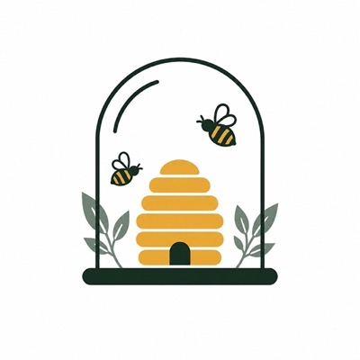

Ruchers et ruches
Emplacements, formats (Dadant, ruchette...), transhumance en quelques gestes, Atelier pour les ruches rangees.

Beevarium Se connecterBeevarium suit vos ruchers, vos ruches, vos reines et vos recoltes. Les visites se saisissent au rucher, meme sans reseau, et se synchronisent au retour.
Emplacements, formats (Dadant, ruchette...), transhumance en quelques gestes, Atelier pour les ruches rangees.
Couvain, reserves, note, mouvements de cadres et tags : saisis sans reseau, envoyes une seule fois au retour.
Origine, race, date de mise en place, historique des remplacements et alerte des reines agees.
Reine non vue, couvain faible, visite trop ancienne : les ruches a voir en priorite remontent seules.
Stock de l'Atelier par element et par format, ruche montee depuis le stock, demontage qui remet tout en stock.
Miel par ruche et par rucher, evolution des cadres et du couvain, fiche detaillee de chaque ruche.
Beevarium est construit pas a pas avec les retours de ses utilisateurs. Les places de la beta sont limitees.
Demander une invitation